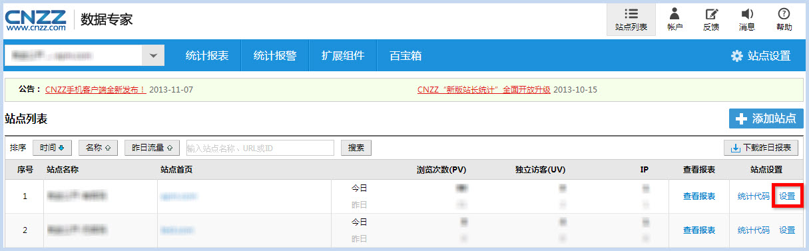
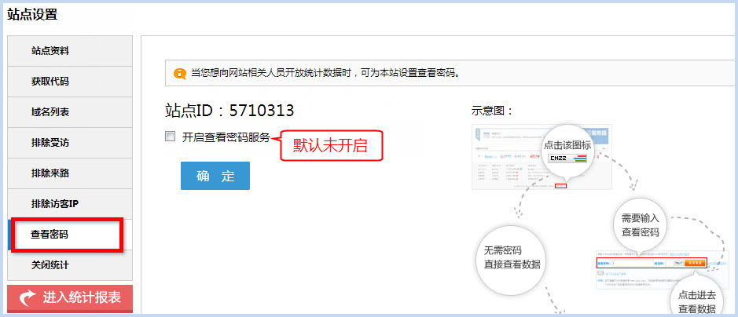
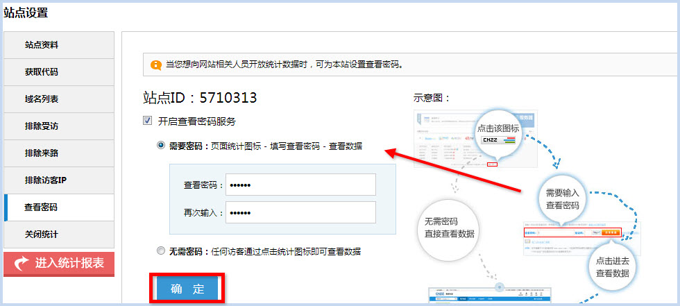
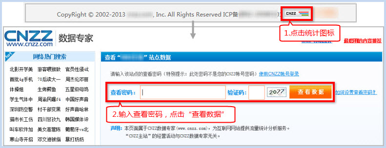

1、登录站长统计，在【站点列表】找到需要设置查看密码的站点，点击“设置”：

2、左侧菜单点击“查看密码” -> 该站点的查看密码功能默认为未开启状态：

勾选“开启查看密码服务” -> 选择“需要密码” -> 在密码设置框输入您的查看密码（并“再次输入”确认） -> 点击“确定”保存：

3、通过查看密码查看数据：打开您的网站，点击页面统计图标 -> 输入查看密码 -> 即可看到本站数据：
